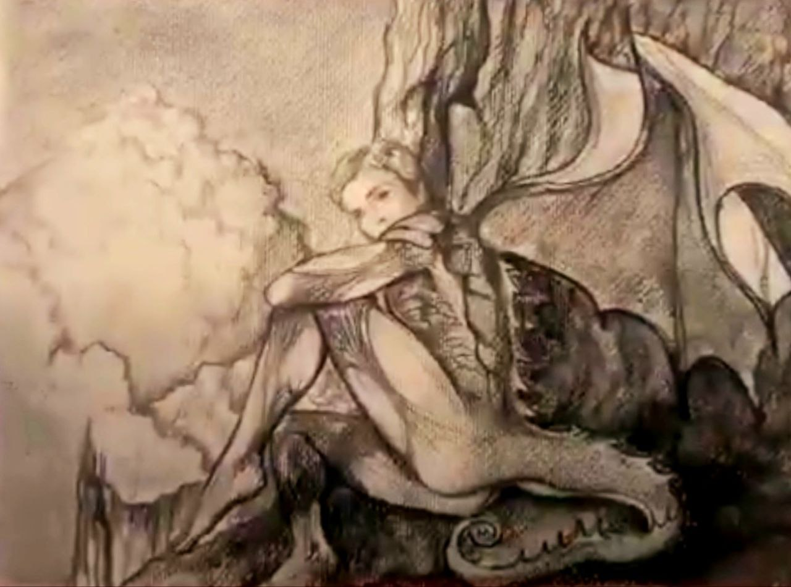
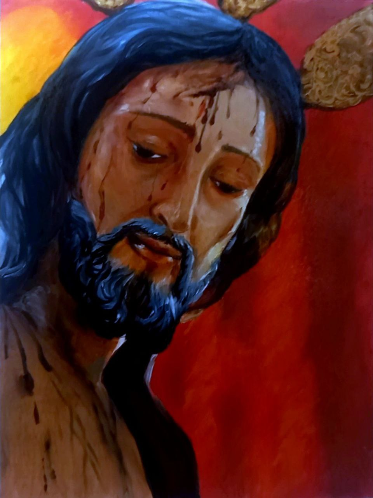

Religión y Mitología
Dragón devorando dos hombres

Medidas: 30 x 40 cm
Estilo artistico: Grafito y Acuarelas
Ser Mitológico
Medidas: 30 x 40 cm
Estilo artistico: Carboncillo y Acuarelas
Cristo de la flagelación
Medidas: 35 x 40 cm
Estilo artistico: Oleo
Sirenas

Medidas: 20 x 30 cm
Estilo artistico: Oleo
Virgen de la amargura

Medidas: 35 x 45 cm
Estilo artistico: Oleo
Penitente
Medidas:
Estilo artistico: